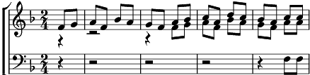

Viva tutte le vezzose
Fa majeur
Musique: Felice Giardini

Viva tutte le vezzose (3x)
donne amabili graziose,
che non hanno crudeltà. (2x)
Viva sempre, viva, viva,
che da loro sol deriva
la magior felicità.